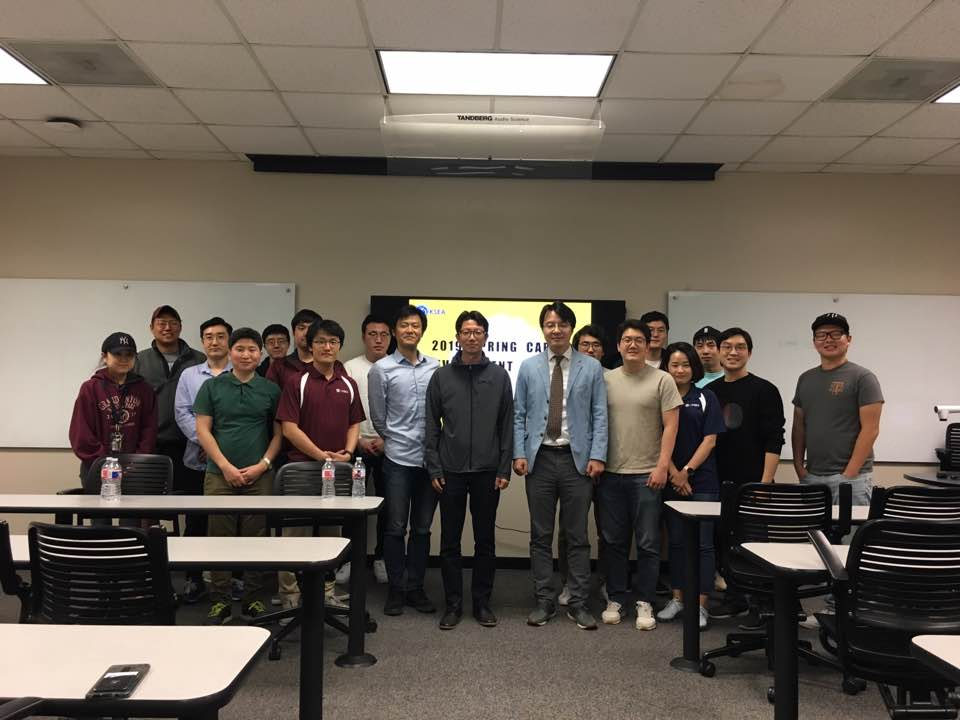
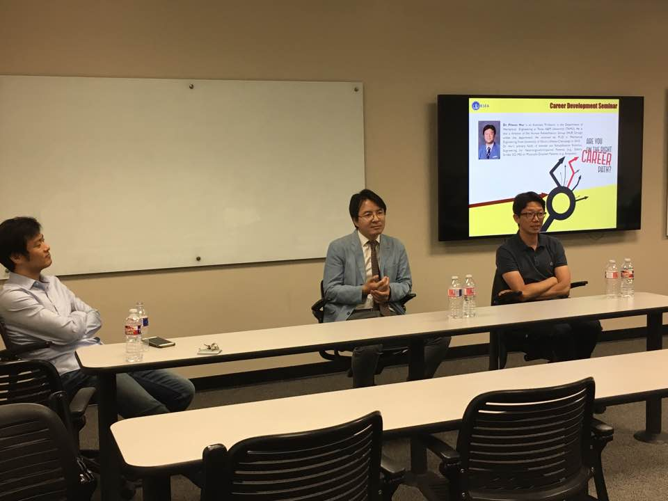
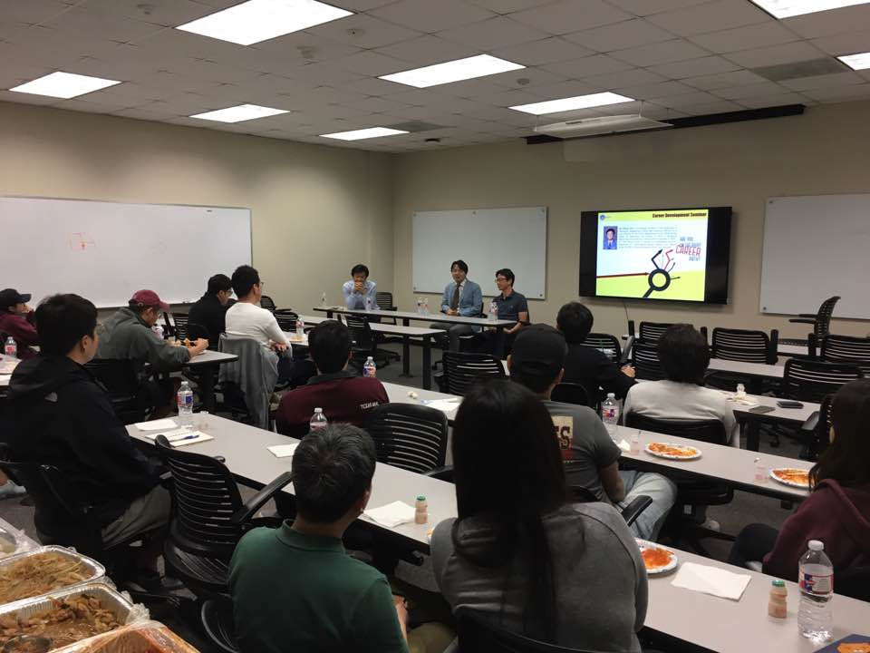
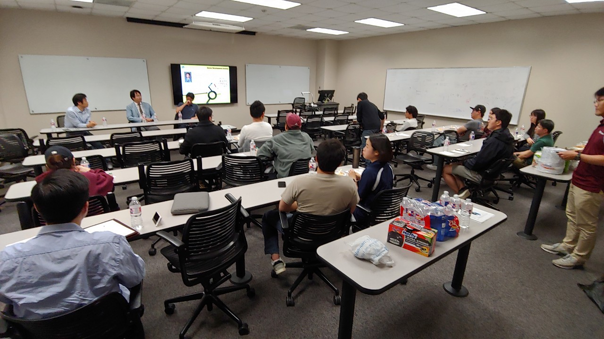
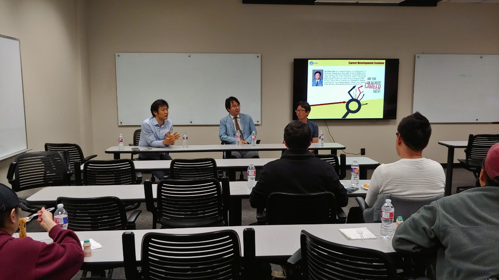
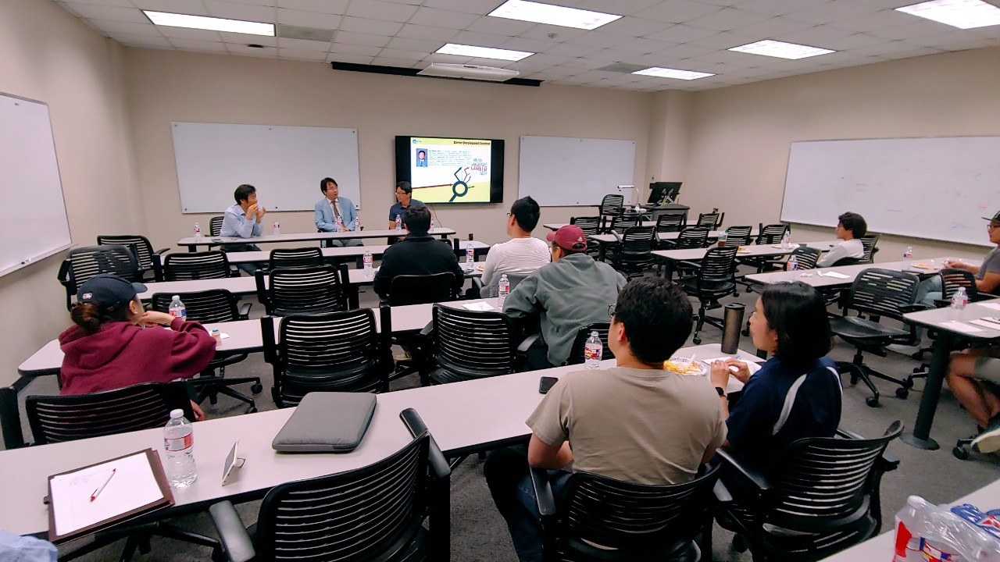
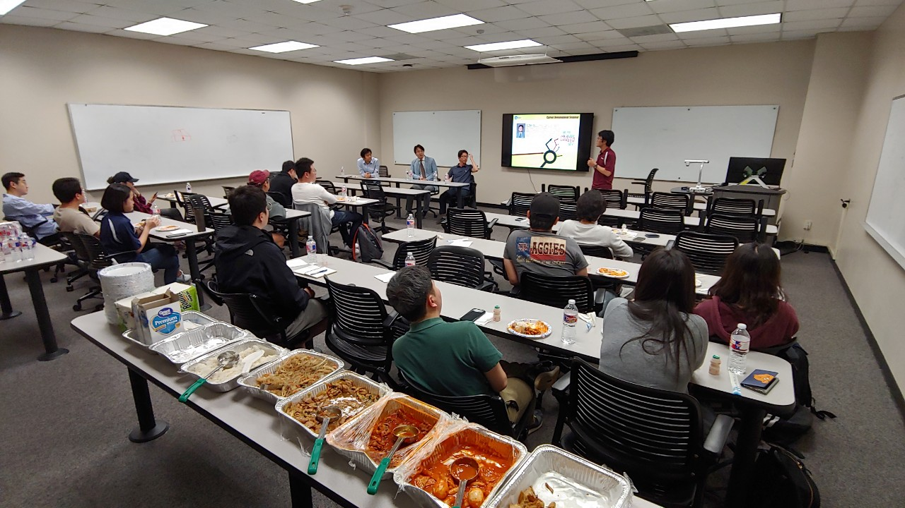

[2019/3/21] KSEA-TAMU Career Seminar for Spring 2019
Written by Pilwon Hur (2019/3/21)
On 3/21/2019, Thursday, there was a panel discussion hosted by Korean-American Scientists and Engineers Association (KSEA) at A&M. The discussion was for graduate students and postdoctoral researchers who seek careers in academia. Topics included practical tips for preparing academic jobs and academic CV. Three guest speakers were invited: Dr. Taeho Kim (Mechanical Engineering, Kukmin University, Korea) and Dr. Jong-Phil Hong (Electrical Engineering, Chungbuk National University) and Dr. Pilwon Hur (Mechanical Engineering, TAMU). Dr. Hur is the current advisor for KSEA-TAMU.








CC BY-SA 4.0 Pilwon Hur. Last modified: May 06, 2024.
Website built with Franklin.jl and the Julia programming language.